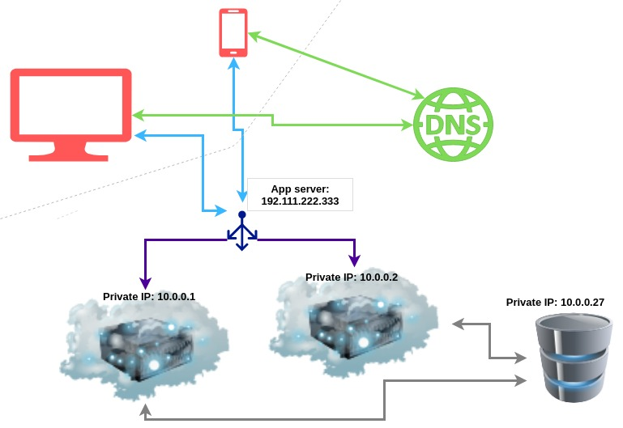

Scalling System via newbie's vision
Thiết kế hệ thống cho 10k user qua góc nhìn của một newbie
Chào mọi người, tuần rồi mình được anh mentor cho một bài tập: "Đề xuất thiết kế hệ thống cho trang blog với 10k users truy cập cùng lúc". Hmmm. Làm kiểu gì bây giờ, vậy là mình bắt đầu tìm hiểu và cũng xin viết ra nhưng gì mình tìm được dưới đây 😊
Phân tích
- Trang web với 10 000 user thì như thế nào?
→ Khá lớn, có thể bị chậm, lag. Nếu thiết kế không tốt có thể crash hệ thống. - Tại sao lại xảy ra hiện tượng chậm, crash như trên?
→ Vì nhiều người cùng truy cập sẽ có nhiều tác vụ, yêu cầu truy xuất, xử lý dẫn đến server không xử lý được. Ngoài ra, băng thông ít cũng dẫn đến việc truy cập bị hạn chế, chậm,... - Tại sao server không xử lý được hoặc chậm?
→ Có thể cấu hình server yếu, chỉ có một server, nhiều tác vụ xử lý lâu dẫn đến nhiều cái khác phải chờ, có thể do truy xuất database quá lớn, khoảng cách địa lý,....
Giải pháp
Đối với các trang web lớn, việc thiết kế hệ thống sao có có tính mở rộng (scalability) là rất cần thiết.
Bài viết hơi dài, mình xin để thêm phần mục lục :((
Các phương pháp
- Vertical Scalling vs Horizontal Scalling
- Load Balancing
- Database Replication
- Caching
- CDNs
- Stateless Architecture
- Database Partitioning
- Tóm tắt
Để thiết kế được hệ thống như vậy, ta sẽ đi từ những bước cơ bản nhất: từ một vài user đến hàng ngàn user.
Giai đoạn đầu tiên: 1 user
Đây là lúc chúng ta đang thiết kế chỉ mình ta sử dụng. Sau khi xây dựng các file, data,... việc chúng ta cần chỉ là tìm một cái host để mà deploy trang web mà thôi. Hiện nay, các nhà cung cấp dịch vụ cloud (cloud provider) như AWS, Google Cloud sẽ giúp ta đơn giản hóa việc này rất nhiều mà không cần mua một cái server riêng làm gì. Bản chất các cloud provider này dành cho trang web của ta một ít tài nguyên trên máy ảo như CPU, RAM, SSD,... Và thế là trang web của ta hoạt động ngon lành. Tuy nhiên, cuộc đời không phải màu hồng, sẽ có lúc trang web của ta có nhiều người truy cập hơn, có thể là vài trăm thay vì vài chục như trước (con số tương đối). Vấn đề bắt đầu xuất hiện ở đây chính là sẽ có những lúc mà nhiều người thấy trang web chậm quá, đứng, treo,... Đấy là lúc ta cần nâng cấp hệ thống một xíu.
Giai đoạn 2: 100 ~ 500 user
Nguyên nhân đơn giản nhất ở đây chính là server của ta đã không còn đủ mạnh để phục vụ cùng lúc nhiều người nữa. Giống như một quán ăn chỉ với một anh đầu bếp, một vài người thì không sao nhưng vài chục người thì khách phải chờ lâu là hoàn toàn dễ hiểu. Server của ta cũng vậy, ban đầu ta chỉ cung cấp cho nó một lượng tài nguyên nhất định, ví dụ RAM 8Gb, CPU i7, ổ cứng HDD. Càng nhiều người dùng, càng nhiều tác vụ, càng nhiều việc xử lý mà với đám CPU, RAM lèo tèo vậy thật là quá sức. Lúc này, ta sẽ làm một việc mà các thanh niên chơi xe Việt Nam hay làm - ĐỘ XE. Từ một chiếc Cup 50, qua bàn tay của các phù thủy, chúng có thể kéo lên tới 100km/h chẳng thua gì các xe phân khối lớn cả. Đối với server của ta cũng vậy, yếu cái gì, cường hóa cái đó. RAM ít ư, thì thêm RAM; ổ cứng HDD chậm ư, thay luôn SSD; CPU 2 nhân, gấp đôi thành 4 nhân cho mạnh,... Việc mà ta đang làm gọi là Vertical Scalling hay Scalling up. Lợi ích của Vertical Scalling chính là:
- Ít tốn chi phí so với việc mua thêm máy
- Chúng ta không phải thay đổi kiến trúc code của trang web
- Không cần phải xử lý việc giao tiếp phức tạp nếu có nhiều máy
Hay thật, nếu vậy ta chỉ cần cứ thế mà độ server. Nhưng mà không bạn ơi, cái gì cũng có giới hạn, một chiếc cup không thê nâng cấp thành siêu xe được. Mỗi cái máy đều có những ngưỡng (threshold) nhất định. Chẳng hạn ta thêm RAM vượt quá số cổng mà mainboard có được, tương tự như CPU cũng cần độ tương thích nhất định,... Đây là lúc ta cần Horizontal Scalling - mở rộng chiều ngang.

Giai đoạn 3: 500 ~ 2000 user
Dần dần, khi trang web ta phổ biến hơn, lượng user truy cập nhiều hơn và hệ thống ta phải tiếp tục scale thêm. Bây giờ thay vì 1 app server, ta lại lắp thêm 1 cái nữa, rồi 2, 3 tiếp tục như vậy. Lúc này ta cần có sự điều phối sao cho hợp lý, với user này, request này, server nào sẽ xử lý? Đó là lúc ta cần đến Load Balancing.
 Ý tưởng việc này là cần một *Load Balancer* đóng vai trò như một bác công an giao thông vậy. Load Balancer này sẽ tiếp nhận những request của user, từ đó xác định đâu là server gần, phù hợp để xử lý request đó. Ưu điểm của load balancing là giúp điều hướng request tốt hơn; khi một server gặp xự cố, load balancer có thể điều hướng request tới một server khác. Load Balancing cũng giúp tăng cường an ninh cho hệ thống. Ví dụ tránh được các tấn công như DDoS.Giai đoạn 4: 2000 ~ 5000 user
Đến giai đoạn này, hệ thống của ta đã khá lớn, cả về mặt app server lẫn người dùng. Tuy nhiên vẫn còn một điểm ta có thể tiếp tục cải thiện - Database Server. Hiện tại, mọi truy vấn đều do một server xử lý, và với rất nhiều data cần truy vấn nhân thêm với số user cùng truy vấn như thế thì liệu tốc độ có còn được đảm bảo, thậm chí chuyện gì sẽ xảy ra nếu server này không thể xử lý được hay gặp trục trặc? Chắc chắn cả hệ thống của ta cũng sập theo. Chính ví thể ta cần nhiều server để xử lý database hơn. Một phương pháp được áp dụng để giải quyết vấn đề trên là Database Replication.
Đối với Master-Slave Replication, ý tưởng của nó như sau: sẽ có một DB Server được chọn làm Master, tất cả request đọc/ghi server này đều thực hiện được. Trong khi đó Slave Server chỉ đảm nhiệm việc đọc dữ liệu mà thôi. Ý tưởng này xuất phát từ thực tế đơn giản - đó là trang web của ta cần đọc dữ liệu nhiều hơn là thêm dữ liệu mới. Cách làm này có một số ưu điểm như:
- Ta có thể xử lý nhiều truy vấn hơn
- Có nhiều backup, tăng độ an toàn hơn
- Nếu Master server gặp xử cố, việc chọn môt Slave Server thay thế khá đơn giản
Giai đoạn 5: 10000 user
Đây là cột mốc mà bài toán ta hướng đến. Lúc này, chúng ta đã setup hệ thống với nhiều app server, nhiều database server, có load balancer,...Tuy nhiên, cách xử lý của ta vẫn còn chưa tối ưu. Đó là sẽ có những request đã được user A thực hiện, một thời gian sau user A là tiếp tục request như vậy. Cách ta cài đặt ở đây đó là load balancer tìm một server để xử lý -> server này lại tìm một DB server -> DB server lại truy xuất trong một lương lớn data -> trả kết quả về...Thật là mất công, trong khi các bước trên đã từng được thực hiện trước đó, nếu ta có thể lưu kết quả ở đâu đó, để rồi khi có một truy vấn tương tự, ta chỉ việc lấy kết quả đã lưu và trả về. Thật nhanh gọn. Ý tưởng trên chính là kỹ thuật Caching. Ý tưởng nghe đơn giản nhưng hiệu quả vô cùng lớn. Ta sẽ tiết kiệm rất nhiều thời gian thay vì làm một loạt các xử lý.
→ Như vậy, với khá nhiều lần cải tiến, hệ thống của ta lúc này đã được scale khá tốt 😄. Tuy nhiên, thực tế hệ thống của ta vẫn còn có thể làm tốt hơn nữa
Giai đoạn 6: trên 10k user
- Lúc này ta có thể xây dựng hệ thống mạng CDN (Content Delivery Network). Nó giúp ta có nhiều nơi để lưu trữ tài nguyên, những data được cache lại. Để hình dung dễ hơn, lấy hệ thống KFC toàn cầu làm ví dụ. Thay vị miếng gà được giao từ tận trụ sở chính ở Mỹ, ta có thể nhận hàng từ những của hàng KFC gần mình nhất tại Việt Nam.
- Một kĩ thuật khác là dùng Stateless Architecture: mỗi lần user request, load balancer phải tìm kiếm app server, rồi db server để xử lý. Khá là cồng kềnh vì thế nào thì cùng một user, cùng một request thì server được định vị sẽ giống nhau. Ta có thể ghi nhận lại việc này để tái sử dụng lần sau. Những dữ liệu kiểu này thường là lưu thông tin các session và chúng thường không có các thuộc tính, quan hệ rõ ràng. Vì vậy ta sẽ dùng NoSQL để lưu trữ. Như vậy, mỗi request ta chỉ cần xác định có thông tin server sẽ xử lý trước đó chưa mà lấy ra dùng lại.
- Một phương pháp khác đó là chia nhỏ database - Database Partition: những data cùng loại sẽ được tách thành những bảng khác nhau, lưu ở những server khác nhau. Nhờ vậy hạn chế việc truy xuất những thông tin không cần thiết trên một tập dữ liệu lớn.
Tóm tắt
Vừa rồi cũng là những thông tin mà mình tìm hiểu được. Tóm gọn lại để một hệ thống có thể scale tốt hơn, ta có thể áp dụng các phương pháp:
- Vertical Scalling và Horizontal Scalling
- Load Balancing
- Database Replication
- Catching
- Áp dụng mạng CDNs
- Lưu trữ Session với Stateless Architecture
- Database Partioning
Hi vọng bài viết sẽ giúp ích cho các bạn 💕
Tham Khảo
- https://www.cloudzero.com/blog/horizontal-vs-vertical-scaling
- https://www.fortinet.com/resources/cyberglossary/what-is-caching
- https://www.nginx.com/resources/glossary/load-balancing/
- https://devera.vn/blog/our-blog-1/post/database-replication-la-gi-75
- https://docs.microsoft.com/en-us/azure/architecture/best-practices/data-partitioning
- http://www.ines-panker.com/2019/08/03/scaling-1-to-10-000-users.html?fbclid=IwAR3d7ctRu8lEki5zsEvWYM6UlEoYJ-KKSJgsqZLwNnZ18GPqA2DKElEUrOE
- https://levelup.gitconnected.com/how-to-design-a-system-to-scale-to-your-first-100-million-users-4450a2f9703d